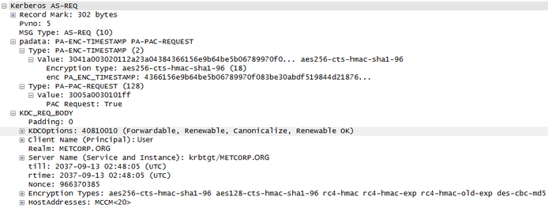

THE DETAILED PROCESS
Here’s my example scenario to explain what occurs when a user logs on and opens Outlook to view his Exchange email. The bold text is the simple overview version while the detail follows.
- A user logs onto the domain metcorp.org on the workstation MetcorpPC.
- The user requests authentication by sending a timestamp encrypted with the users password encryption key.
- The workstation creates an encryption key derived from the user’s password (the user’s password is hashed using a one way function such as MD5 = (A) key) to encrypt a timestamp (date/time) as an authenticator (pre-authentication is required by AD in its default configuration, so the client must send an authenticator) . The authenticator is simply a method the client uses to prove to the KDC that the user is who he claims to be (since only the user & the KDC knows his password) and protects against replay attacks. This information is sent to the KDC in an AS-REQ (Authentication Service Request) packet. This request includes the client supported encryption algorithms.Keys used:
- (A)User’s password derived key
- 
- Packet Data:
- User account (user@metcorp.org) requests Kerberos service ticket (TGT) with PREAUTH dataKRB5: Kerberos AS-REQ
- 1 Forwardable: FORWARDABLE tickets are allowed/requested
- 1 Renewable: This ticket is RENEWABLE
- 1 Canonicalize: This is a request for a CANONICALIZED ticket
- 1 Renewable OK: We accept RENEWED ticketsClient Name (Principal): admin
- Realm: METCORP.ORG
- Service: krbtgt/metcorp.org
- till: 2037-09-12 02:48:05 (UTC)
- rtime: 2037-09-12 02:48:05 (UTC)
- Nonce: 1976014234
- Principal Name: user
- HostAddress: METCORPORGDC02<20>
- PAC_Request: True
- Encryption Types: aes256-cts-hmac-sha1-96 aes128-cts-hmac-sha1-96 rc4-hmac rc4-hmac-exp rc4-hmac-old-exp des-cbc-md5KRB5: Kerberos AS-REP
- Client Name (Principal): user
- Tkt-vno: 5
- The Kerberos server (KDC) receives the authentication request, validates the data, and replies with a TGT.
- The KDC receives the AS-REQ, decrypts the authenticator (encrypted with key (A)), and validates the timestamp is within the time skew limits set by the domain (5 minutes by default). If the KDC is satisfied the request is a valid user request, the KDC responds with an AS-REP packet which includes the TGT. The TGT can only be decrypted by a KDC (using the (B) key) and is used to authenticate the user to the Kerberos server so it doesn’t have to look up the user’s password (long-term key) again. The KDC also includes a session key ((C)key) for use in future communication with the KC.Keys used:
- (B) Kerberos account’s password derived key
- (C)User’s Kerberos service (KDC) session key NOTE: The TGT is encrypted with the KRBTGT account password so only a valid Kerberos server can decrypt it. In an environment with RODCs, each RODC has its own krbtgt account with a unique password. This means that if a user presents a TGT received from a RODC to a writable DC, the DC dumps the TGT and generates a new one.
-

- Packet Data:
- The KDC replies with the TGT and session key
- KRB5: Kerberos AS-REP
- Client Name (Principal): User
- Ticket (Tkt-vno): 5
- Realm: METCORP.ORG
- Server Name: krbtgt/metcorp.org
- enc-part aes256-cts-hmac-sha1-96
- [Encrypted Key]
- enc-part rc4-hmac
- [Encrypted Key]
- The user opens Outlook which locates the user’s mailbox server and requests a TGS ticket for access.
- The workstation locates the Exchange mailbox server containing the user’s mailbox (MetcorpEXMB02.metcorp.org) and reads the ServicePrincipalName attribute on the computer account in AD (ExchangeMDB/MetcorpEXMB02.metcorp.org – there are a bunch, so I will just use this one for the example).
- The client then sends a TGS-REQ to the KDC requesting a TGS for access to the Exchange service running on the MetcorpEXMB02 Exchange server. The TGS request includes the target server SPN, the user’s TGT (encrypted with the (B) key), and an authenticator (encrypted with the (C)key).Keys used:
- (B) Kerberos account’s password derived key
- (C)User’s Kerberos service (KDC) session key
-

- Packet Data:
- User account requests service ticket (TGS) for MetcorpEXMB02 Exchange service access
- KRB5: Kerberos TGS-REQ
- 1 Forwardable: FORWARDABLE tickets are allowed/requested
- 1 Renewable: This ticket is RENEWABLE
- 1 Canonicalize: This is a request for a CANONICALIZED ticket
- Realm: METCORP.ORG
- Server Name: ExchangeMDB/MetcorpEXMB02.metcorp.org
- till: 2037-09-12 02:48:05 (UTC)
- Nonce: 1976014234
- Encryption Types: aes256-cts-hmac-sha1-96 aes128-cts-hmac-sha1-96 rc4-hmac rc4-hmac-exp rc4-hmac-old-exp des-cbc-md5KRB5: Kerberos AS-REP
- The KDC validates the TGS request and replies with the TGS.
- The KDC replies with a TGS-REP packet to the client which includes 2 session tickets (TGS) (2?). One of the session tickets is encrypted with the user’s (KDC) session key ((C) key) and the second one is encrypted with the target server’s (KDC) session key ((D) key). The second TGS also includes the user’s group membership & associated SIDs which provides the server information used to determine authorization and help the server determine: Is the user allowed to access the server’s resource?
- Both session tickets include a new session key ((E)key) for exclusive use in communication between the Exchange server and the user.Keys used:
- (C) User’s Kerberos service (KDC) session key
- (D) Server’s Kerberos service (KDC) session key
- (E)User-Exchange service session key

- Packet Data:
- The KDC replies with the service ticket (TGS) for MetcorpEXMB02 Exchange service access
- KRB5: Kerberos TGS-REP
- Client Name (Principal): User
- Ticket (Tkt-vno): 5
- Realm: METCORP.ORG
- Server Name: krbtgt/metcorp.org
- enc-part aes256-cts-hmac-sha1-96
- [Encrypted Key]
- enc-part rc4-hmac
- [Encrypted Key]
- The client authenticates to the Exchange server with the session ticket.
- The client sends the target server (MetcorpEXMB02.metcorp.org) an AP-REQ packet containing the TGS it received from the KDC encrypted with the server’s session key ((D) key) and an authenticator encrypted with the user-Exchange server session key ((E) key) . This lets the Exchange server know that the user was authenticated to the Kerberos domain (realm) and that the TGS is valid (assuming the Exchange server is able to decrypt it). The client also sends the server an authenticator (timestamp) encrypted with the session key ((E)key) it received from the KDC in Step 5. The Exchange server decrypts the TGS, extracts the user’s group information, extracts the session key, and uses the session key to decrypt the authenticator. This provides the server enough information to make an authorization decision. If the user is authorized to connect to the server, it sends a reply.Keys used:
- (C) User’s Kerberos service (KDC) session key
- (D) Server’s Kerberos service (KDC) session key
- (E) User-Exchange service session key
- The Exchange server replies that authorization to the service is granted.
- The Exchange server sends the client an AP-REP packet which includes its own authenticator encrypted with the user-Exchange service session key ((E) key). This assumes the client requested mutual authentication which is the default configuration.Keys used:
- (E)User-Exchange service session key
Note:
This is a simplified explanation of Kerberos and doesn’t cover everything involved in this process.
Kerberos Key Storage Locatons
Workstation Keys:
- User Key
- Ticket-Granting Ticket
- Ticket-Granting Service Session Key
- Service Ticket
- Session Key
Domain Controller:
- User Key
- Ticket-Granting Service Key
- Service Key
Server:
TICKETING
There are different “tickets” that are used to authenticate a client to a server’s resource. The client can be a user or a computer.
The Ticket Granting Ticket (TGT) is the first ticket given to the requester (user or computer.
The TGT is comprised of the following fields:
- Ticket Version Number
- Realm: The AD domain name in CAPITAL LETTERS
- Server Name: The KDC
- Flags: Kerberos Flag options
- Key
- Client Realm: The client’s AD domain name in CAPITAL LETTERS
- Client Name: The user name
- Transited: If the user is in a different domain than the resource, Kerberos tickets have transited.
- Authentication
- Time
- Start Time
- End Time
- Renew Till
- Client Address
- Authorization Data
Ticket Flags:
- FORWARDABLE
- FORWARDED
- PROXIABLE
- PROXY
- MAY-POSTDATE
- POSTDATED
- INVALID
- RENEWABLE
- INITIAL
- PRE-AUTHENT
- HW-AUTHENT
Supported Encryption Algorithms & Key Lengths:
DEFAULT AD KERBEROS POLICY SETTINGS- Enforce user logon restrictions: Enabled
- Maximum lifetime for service ticket: 600 minutes (10 hours)
- Maximum lifetime for user ticket: 600 minutes (10 hours)
- Maximum lifetime for user ticket renewal : 7 days
- Maximum tolerance for computer clock synchronization: 5 minutes